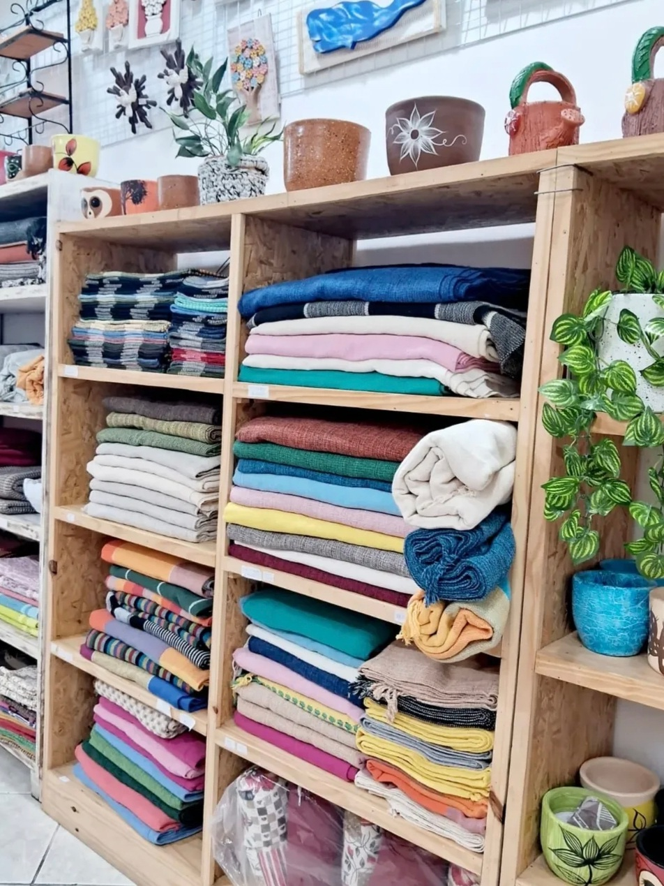
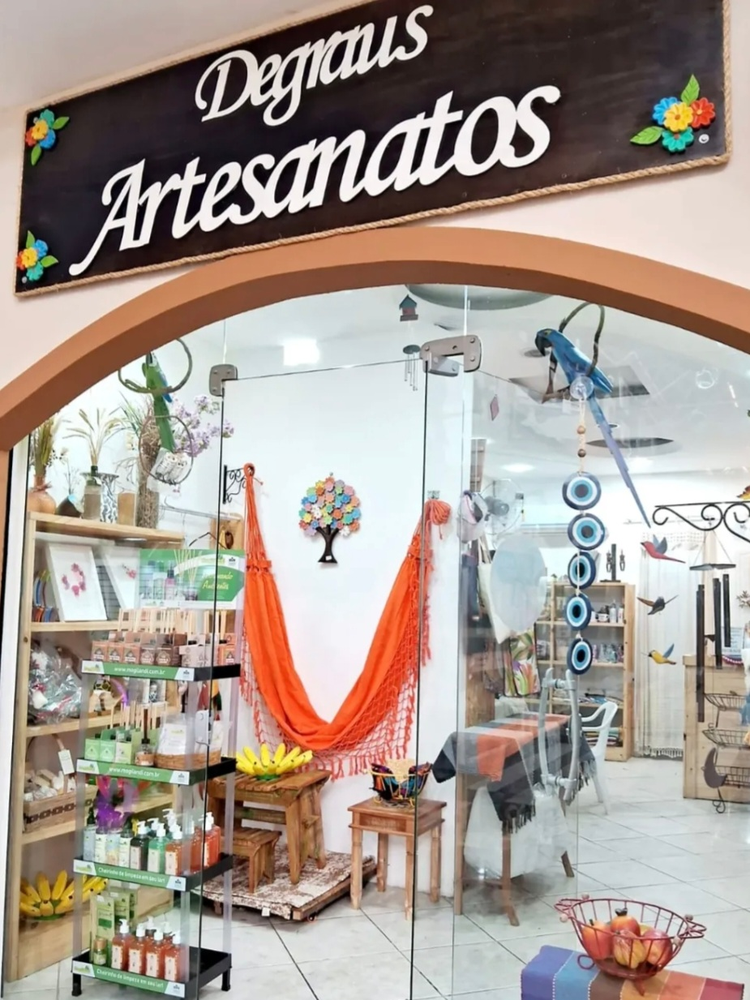
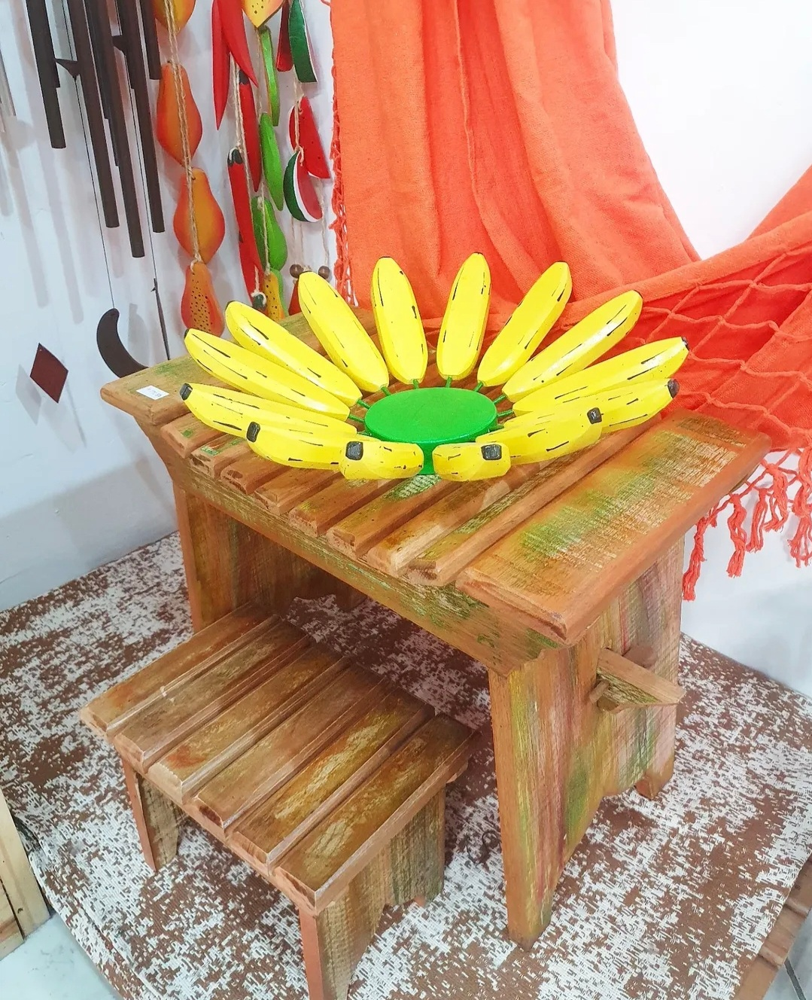

Quem somos ?



Somos uma loja de artesanatos no centro de São de Gonçalo, vendemos:
mantas, tapetes, redes, vasos de cerâmica, quadros de ferro e madeira,
kits presentes, difusores e outros.E também oferecemos aulas de artesanatos,
no momento temos disponíveis aulas de crochê, costura em feltro e pintura em molde vazado.
∴
O artesanato vai muito além de uma atividade criativa ele é uma forma de expressão,
terapia e geração de renda. Ao trabalhar com as mãos, desenvolvemos concentração, paciência
e coordenação motora, além de estimular a criatividade. O ato de criar algo único com dedicação
traz satisfação pessoal e fortalece a autoestima. Além disso, o artesanato promove o resgate
de tradições culturais e pode ser uma excelente oportunidade de empreendedorismo e inclusão social.
Em grupo, ainda favorece o convívio, a troca de experiências e o bem-estar emocional!